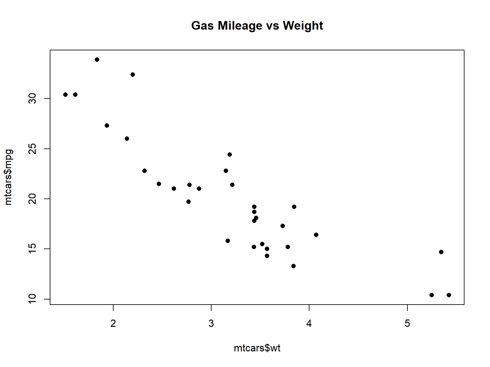

Spatial Data Analysis with R
BayGeo, Spring 2022
Tables 101
Tables 101
R has two data classes that organize data in rows and columns:
A tibble is a data frame that prints nicer and has slightly different default behavior when selecting columns.
A row, by any other name…
rows
aka:
- record
- case
- feature (spatial)
columns
aka: variable, field
## Sepal.Length Sepal.Width Petal.Length Petal.Width Species
## 1 5.1 3.5 1.4 0.2 setosa
## 2 4.9 3.0 1.4 0.2 setosa
## 3 4.7 3.2 1.3 0.2 setosa
## 4 4.6 3.1 1.5 0.2 setosa
## 5 5.0 3.6 1.4 0.2 setosa
## 6 5.4 3.9 1.7 0.4 setosa| Data Frame / Tibble | Matrix | |
|---|---|---|
| Data type | each column can be a different data type | entire matrix must use the same data type |
| Column names | built-in, columns can referenced by name | optional, can be defined as an attribute for display |
| More than two dimensions | no | yes (array) |
| Can add rows and columns | yes | yes |
| Matrix algebra | no | yes |
Matrix Algebra Example: Compute the Stable Age Distribution with a Leslie Matrix
Here we compute the growth rate and stable age population using a Leslie Matrix model. A Leslie Matrix model is similar to a life table for a population structured by age or class. The first row stores the fecundity rate (number of offspring per female of different age classes) while the subsequent rows store the fraction of individuals that survive to the next age class.
Create a matrix from scratch use the matrix() function.
## Create a Leslie matrix for a Burpie population with three age classes
matrix_values <- c(0, 2, 1, 0.6, 0, 0, 0, 0.5, 0)
b_lesmat <- matrix(data=matrix_values, ncol=3, byrow = TRUE)
b_lesmat
## Compute the Eigenvalues and Eigenvectors
b_eig <- eigen(b_lesmat)
## The dominant Eigenvalue is the population growth rate
b_eig$values[1]
## The dominant Eigenvector represents the stable age distribution
b_eig$vectors[,1] / sum(b_eig$vectors[,1])## [,1] [,2] [,3]
## [1,] 0.0 2.0 1
## [2,] 0.6 0.0 0
## [3,] 0.0 0.5 0
## [1] 1.203829
## [1] 0.5863659 0.2922504 0.1213837⇒ the population is growing at about 20% per generation
⇒ stable age distribution: 58% of the population in age class 1, 29% in age class 2, and 12% in age class 3.
There are number of sample data frames that come with R, including:
iris
trees
quakes
airquality
mtcars
faithful
You can generally start using a bundled dataset by just typing its name in an expression. R will load it on-the-fly.
To explicitly load a dataset into memory, execute data()
An easy way to import a csv file is the ‘Import Dataset’ button in RStudio. This tool generates all the arguments for the read.csv() function.
Let’s import a csv file containing the stopping distance of cars.
csv_fn <- "./data/stopping_dist_cars.csv" ## Define the file name
file.exists(csv_fn) ## Verify it exists!
stop_dist_df <- read.csv(csv_fn) ## Import
head(stop_dist_df) ## Verify it came in ok!## [1] TRUE
## speed surface reaction_dist breaking_dist total_dist
## 1 40 dry 17 9 26
## 2 50 dry 21 14 35
## 3 60 dry 25 20 45
## 4 70 dry 29 27 56
## 5 80 dry 33 36 69
## 6 90 dry 38 45 83Other options for importing tables into R:
readr is a tidyverse package with more options for importing tabular data from text files.
readxl is the go-to package for importing data from Excel.
If your data live in a Google Sheet, you can use googlesheets4.
Functions to explore data frames include:
| Function | Results |
|---|---|
| head(), tail() | view the first / last few rows |
| View() | View the entire data frame in a new tab |
| names() | View column names |
| nrow(), ncol(), dim() | view number of rows & columns |
| help() | view function help page |
| summary() | numeric summary of each column |
| tibble::glimpse() | concise summary of each column |
Common data munging tasks with data frames include:
Two approaches: Base R functions & packages from the tidyverse.
What’s the difference? Much of it is readabilty. See for example the following chunks of equivalent code:
Base R
tidyverse
You can grab an individual column by name with the $ selector.
## [1] 2.620 2.875 2.320 3.215 3.440 3.460 3.570 3.190 3.150 3.440 3.440 4.070 3.730 3.780 5.250 5.424 5.345
## [18] 2.200 1.615 1.835 2.465 3.520 3.435 3.840 3.845 1.935 2.140 1.513 3.170 2.770 3.570 2.780## Min. 1st Qu. Median Mean 3rd Qu. Max.
## 1.513 2.581 3.325 3.217 3.610 5.424
One of the most common things you do with data frames is selecting specific rows and/or columns.
In base R, this is commonly done with square bracket notation:
my_dataframe[rows, columns]
Where rows is a vector of integers, or vector of logicals (TRUE/FALSE) of the row numbers you want.
Example 1: rows is a vector of integers:
## mpg cyl disp hp drat wt qsec vs am gear carb
## Hornet Sportabout 18.7 8 360.0 175 3.15 3.44 17.02 0 0 3 2
## Valiant 18.1 6 225.0 105 2.76 3.46 20.22 1 0 3 1
## Duster 360 14.3 8 360.0 245 3.21 3.57 15.84 0 0 3 4
## Merc 240D 24.4 4 146.7 62 3.69 3.19 20.00 1 0 4 2
## Merc 230 22.8 4 140.8 95 3.92 3.15 22.90 1 0 4 2
## Merc 280 19.2 6 167.6 123 3.92 3.44 18.30 1 0 4 4Example 2: rows is a vector of logical values:
mtcars[c(TRUE,FALSE,TRUE,FALSE,FALSE,FALSE,FALSE,TRUE,TRUE,TRUE,
TRUE,TRUE,FALSE,FALSE,TRUE,TRUE,FALSE,FALSE,TRUE,TRUE,
FALSE,TRUE,FALSE,FALSE,TRUE,FALSE,FALSE,FALSE,FALSE,
FALSE,FALSE,TRUE), ]## mpg cyl disp hp drat wt qsec vs am gear carb
## Mazda RX4 21.0 6 160.0 110 3.90 2.620 16.46 0 1 4 4
## Datsun 710 22.8 4 108.0 93 3.85 2.320 18.61 1 1 4 1
## Merc 240D 24.4 4 146.7 62 3.69 3.190 20.00 1 0 4 2
## Merc 230 22.8 4 140.8 95 3.92 3.150 22.90 1 0 4 2
## Merc 280 19.2 6 167.6 123 3.92 3.440 18.30 1 0 4 4
## Merc 280C 17.8 6 167.6 123 3.92 3.440 18.90 1 0 4 4
## Merc 450SE 16.4 8 275.8 180 3.07 4.070 17.40 0 0 3 3
## Cadillac Fleetwood 10.4 8 472.0 205 2.93 5.250 17.98 0 0 3 4
## Lincoln Continental 10.4 8 460.0 215 3.00 5.424 17.82 0 0 3 4
## Honda Civic 30.4 4 75.7 52 4.93 1.615 18.52 1 1 4 2
## Toyota Corolla 33.9 4 71.1 65 4.22 1.835 19.90 1 1 4 1
## Dodge Challenger 15.5 8 318.0 150 2.76 3.520 16.87 0 0 3 2
## Pontiac Firebird 19.2 8 400.0 175 3.08 3.845 17.05 0 0 3 2
## Volvo 142E 21.4 4 121.0 109 4.11 2.780 18.60 1 1 4 2Example 3: rows is an expression that returns a vector of logical values:
## mpg cyl disp hp drat wt qsec vs am gear carb
## Datsun 710 22.8 4 108.0 93 3.85 2.320 18.61 1 1 4 1
## Merc 240D 24.4 4 146.7 62 3.69 3.190 20.00 1 0 4 2
## Merc 230 22.8 4 140.8 95 3.92 3.150 22.90 1 0 4 2
## Fiat 128 32.4 4 78.7 66 4.08 2.200 19.47 1 1 4 1
## Honda Civic 30.4 4 75.7 52 4.93 1.615 18.52 1 1 4 2
## Toyota Corolla 33.9 4 71.1 65 4.22 1.835 19.90 1 1 4 1
## Toyota Corona 21.5 4 120.1 97 3.70 2.465 20.01 1 0 3 1
## Fiat X1-9 27.3 4 79.0 66 4.08 1.935 18.90 1 1 4 1
## Porsche 914-2 26.0 4 120.3 91 4.43 2.140 16.70 0 1 5 2
## Lotus Europa 30.4 4 95.1 113 3.77 1.513 16.90 1 1 5 2
## Volvo 142E 21.4 4 121.0 109 4.11 2.780 18.60 1 1 4 2Example 4: columns can be a vector of integers, logicals, or column names:
## mpg cyl disp wt
## Datsun 710 22.8 4 108.0 2.320
## Merc 240D 24.4 4 146.7 3.190
## Merc 230 22.8 4 140.8 3.150
## Fiat 128 32.4 4 78.7 2.200
## Honda Civic 30.4 4 75.7 1.615
## Toyota Corolla 33.9 4 71.1 1.835
## Toyota Corona 21.5 4 120.1 2.465
## Fiat X1-9 27.3 4 79.0 1.935
## Porsche 914-2 26.0 4 120.3 2.140
## Lotus Europa 30.4 4 95.1 1.513
## Volvo 142E 21.4 4 121.0 2.780| append rows | rbind() |
| combine data frames | cbind() |
| add new columns | transform() |
| join data frames based on common field | merge() |
| sort rows | x[order(x$col_to_sort_on),] |
We will not go over these Base R functions, but see the tutorials on the Resources page.
The most common class for storing tabular data in R is the data frame
- matrices are like data frames but don’t have named columns
- tibbles are data frames that print nicer
View the first few rows of a data frame with head()
View an entire data frame with View()
Grab an individual column with $
Grab specific rows and columns with my_df[rows-expression, cols-expression]